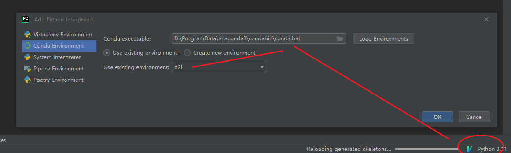

conda环境配置
Anaconda
下载、配置
# conda环境变量自行设置
# 配置清华源
conda config --add channels https://mirrors.tuna.tsinghua.edu.cn/anaconda/pkgs/free/
conda config --add channels https://mirrors.tuna.tsinghua.edu.cn/anaconda/pkgs/main/
conda config --add channels https://mirrors.tuna.tsinghua.edu.cn/anaconda/cloud/pytorch/
conda config --add channels https://mirrors.tuna.tsinghua.edu.cn/anaconda/cloud/conda-forge/
conda config --set show_channel_urls yes
conda config --set ssl_verify false
# pip 设置默认清华源, 否则需要 pip install xxx -i https://pypi.tuna.tsinghua.edu.cn/simple
pip config set global.index-url https://pypi.tuna.tsinghua.edu.cn/simple
安装、notebook使用
# Anaconda Powershell Prompt (Anaconda3)
(base) PS C:\Users\F1243749> conda -V
conda 4.12.0
(base) PS C:\Users\F1243749> conda create -n d2l python=3.9 -y
(base) PS C:\Users\F1243749> conda activate d2l
(d2l) PS C:\Users\F1243749> jupyter notebook
pycharm配置conda
-
配置conda环境 
-
使用
Pytorch-CUDA安装
参考 kaggle笔记
- 保证系统存在至少一块GPU
- 查看 nvidia-smi（驅動），确认有驱动, 且 cuda driver >= cuda toolkit 版本
- 创建虚拟环境
- 安装附带CUDA toolkit(不完整版)pytorch